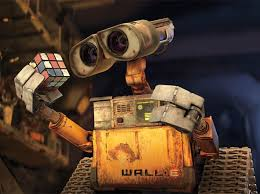
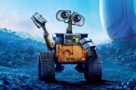

La vida de WALL·E
En el siglo XXIX, específicamente en el año 2805, el consumismo desenfrenado, la codicia empresarial y la negligencia ambiental han convertido al planeta Tierra en un páramo lleno de basura; la humanidad no se encuentra por ningún lado y ha sido evacuada por la megacorporación Buy-n-Large (BnL) en gigantes naves generacionales siete siglos antes. De todos los robots compactadores de basura Waste Allocation Load Lifter - Earth class o WALL•E, solo uno queda. Un día, la rutina de WALL•E de comprimir basura y recolectar objetos interesantes se rompe con la llegada de una nave no tripulada que lleva una robot llamada Evaluador de Vegetación Alienígena o EVA, enviada para escanear el planeta en busca de vida sustanciable para los humanos. WALL•E se enamora de ella, y los dos comienzan a conectarse hasta que EVA entra en modo de espera cuando WALL•E le muestra su hallazgo más reciente: una planta viva. Luego, la nave recolecta a EVA y la planta y, con WALL•E aferrado, regresa a su nave nodriza, el Axioma.
En los siglos transcurridos desde que el Axioma salió de la Tierra, sus pasajeros se han degenerado en una obesidad extrema debido a la pereza y la microgravedad, atendidas sus necesidades por las máquinas. El Capitán B. McCrea, acostumbrado a descansar mientras su teniente robótico, un piloto automático llamado AUTO vuela la nave, se sorprende por una respuesta positiva de la sonda y se entera de que colocar la planta en el Holo-Detector de la nave activará un hipersalto de regreso a la Tierra para que la humanidad pueda comenzar a recolonizar. Sin embargo, la planta no se encuentra en el compartimiento de almacenamiento de EVA, y ella culpa a WALL•E por su desaparición. Sin la planta, EVA es considerada defectuosa y se la llevan a Diagnósticos. Confundiendo el proceso con una tortura hacia EVA, WALL•E procede a "salvarla", pero termina liberando a los robots defectuosos del Axioma, los Rechaza-bots, en el proceso, haciendo que sean designados como renegados. Frustrada, EVA intenta enviar a WALL•E a casa en un cápsula de escape, pero son interrumpidos cuando llega el primer oficial de AUTO, un robot llamado GO-4 (B-M en España), y pone la planta robada en una cápsula configurada para autodestruirse. Para salvar la planta, WALL•E sube a la cápsula, pero es lanzada con WALL•E dentro. Usando una salida de emergencia, EVA persigue la cápsula, que finalmente explota. WALL•E logró escapar con la planta ilesa, y él y EVA se reconcilian, celebrando con un baile fuera del Axioma.
EVA lleva la planta al capitán McCrea, quien observa las grabaciones de EVA de la Tierra y concluye que tienen que regresar. Sin embargo, AUTO se revela leal solo a la directiva A113―emitida incorrectamente después de que BnL decidiera que la Tierra no podía salvarse, mientras EVA observa las grabaciones que se generaron cuando ella estaba en modo de espera, dándose cuenta de que WALL•E se enamoró de ella. Cuando McCrea revoca esta directiva, AUTO y GO-4 se amotinan como resultado, electrocutando y fríendo la placa de circuito de WALL•E, poniendo a EVA en espera, arrojándolos a ambos por el conducto de basura junto con la planta y confinando a McCrea en su cabina. WALL•E, EVA y la planta son casi expulsados al espacio junto con la basura del Axioma en una esclusa de aire, pero las puertas de la esclusa son accidentalmente cerradas por un Microbe Obliterator o M-O, un robot programado para descontaminar que había seguido a WALL•E limpiando los rastros de sus llantas e inadvertidamente alerta a los robots WALL•A, haciéndolos abortar la eyección. WALL•E, EVA, M-O y los Rechaza-bots se abren paso hasta el Holo-Detector, mientras que McCrea y AUTO luchan por control. AUTO inclina la nave, obligando a EVA a mantener a salvo a los humanos. WALL•E se sacrifica para mantener el Holo-Detector abierto y es aplastado por AUTO, pero McCrea finalmente se levanta por su cuenta, domina y desactiva a AUTO, enderezando la nave. EVA inserta la planta en el Holo-Detector, iniciando el hipersalto.
Al regresar a la Tierra, EVA repara a WALL•E, pero descubre que su memoria se restableció. Con el corazón roto, EVA le da a WALL•E un "beso" de despedida, que restablece su memoria y restaura su personalidad original. WALL•E, EVA, M-O y los Rechaza-bots se reúnen mientras McCrea, los humanos y los robots del Axioma dan sus primeros pasos en la Tierra y siembran la planta. Durante los créditos, se muestra a humanos y robots aprendiendo a cultivar, pescar y construir, reconstruyendo así el planeta Tierra, con los humanos perdiendo peso y regenerando su estructura ósea. Así, ellos y los robots convierten el planeta devastado en un paraíso, y se muestra que la planta se ha convertido en un frondoso árbol, el cual WALL•E y EVA contemplan juntos.